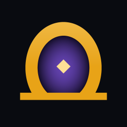
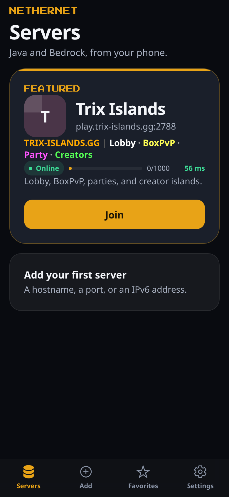
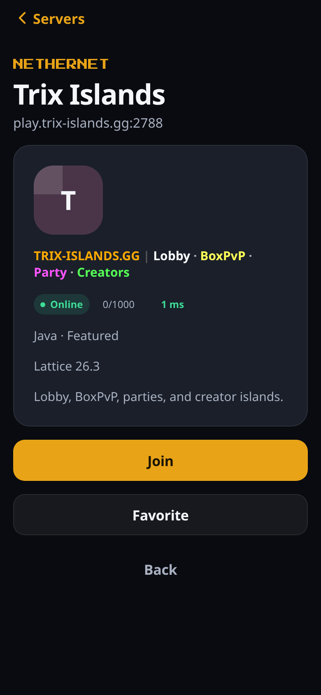
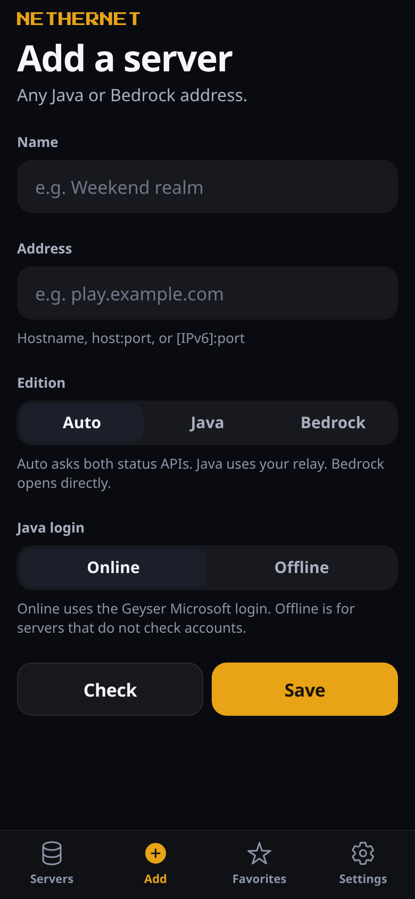
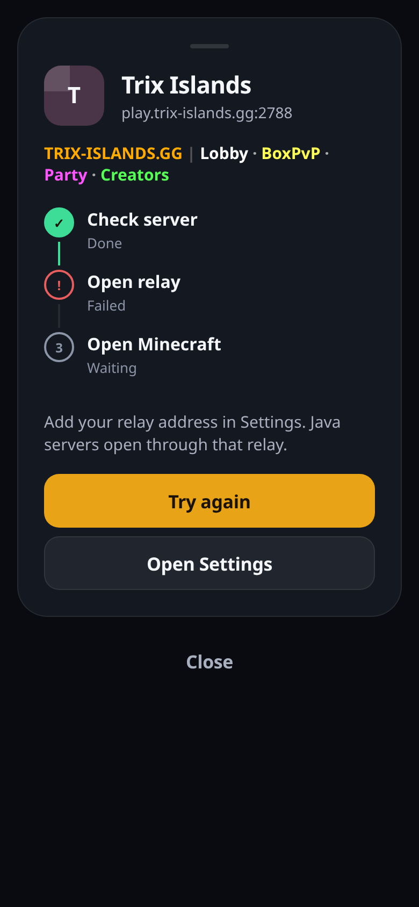

Bedrock, any port
Type a hostname or a custom port. A plain domain uses the usual port unless you set one.

NetherNet is a server list for iPhone and iPad. It shows a live MOTD, player count, and ping, then opens the official Bedrock app so you keep the normal touch controls. TestFlight builds will be listed here when they are ready.




Type a hostname or a custom port. A plain domain uses the usual port unless you set one.
The relay starts a short Geyser session. NetherNet then opens a Bedrock link pointed at it.
Your list, favorites, and relay address stay on the device. There is no account and no tracking.